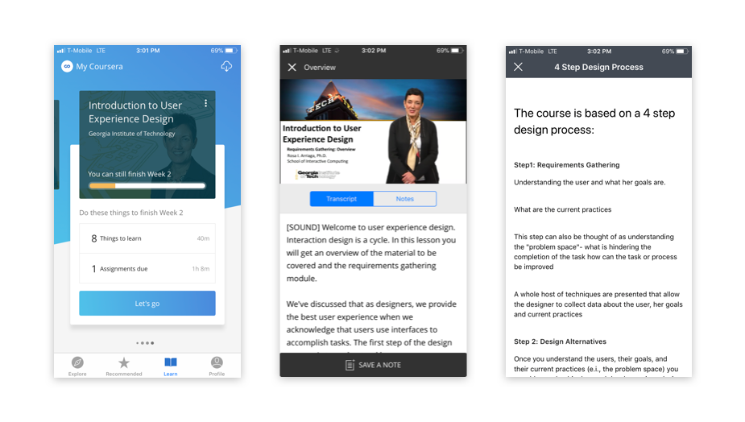
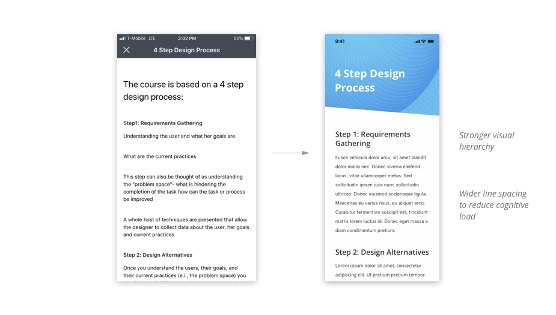
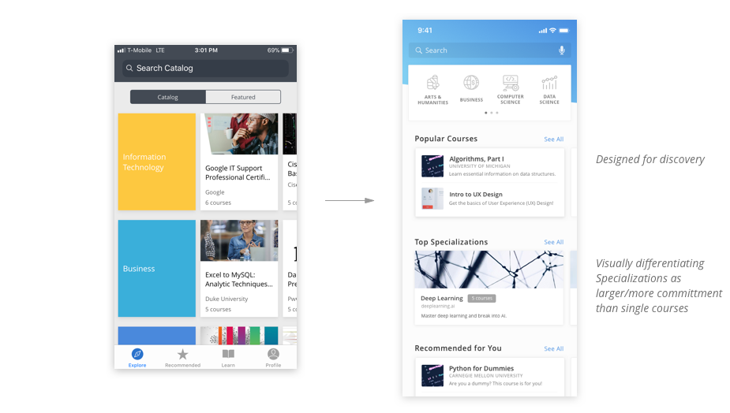
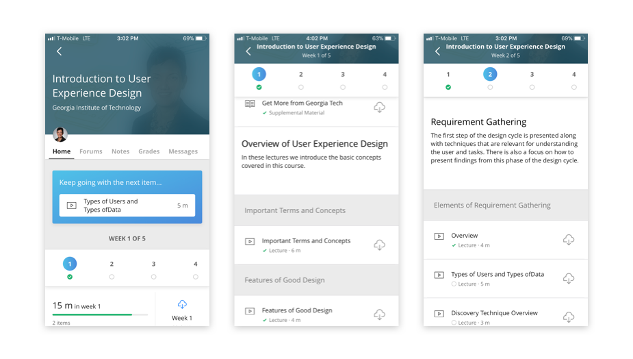

, building tools that teams depend on to manage their work.
, building tools that teams depend on to manage their work.Designing for Social eLearning: A Coursera App Redesign Case Study
Exploring ways to create (re)designs capable of sparking the cognition and emotions to facilitate learning.
Coursera is one of the tools that has allowed individuals across the world to learn from professors at some of the nation’s top institutions. Regardless of location or social background, anyone can expand their knowledge to transform their life or progress their career. But as with any class—and with massive open online courses (MOOCs) like Coursera, in particular—completing a course does not come without significant obstacles.
Overview
How can Coursera better help learners achieve their goals? And, how can I create (re)designs capable of sparking the cognition and emotions to facilitate learning?
This is a huge question, and Coursera is a huge platform. So, I approached this project through three separate lenses while conducting research at every step of the way.
1. The Learning Experience
MOOCs are notorious for their low retention rates. Despite the sheer number of people that register for courses on MOOCs, a very small proportion of those students actually proceed to complete the course.
Coursera’s users seem to lie somewhere between one of the following groups:
- The dedicated student has a strong intrinsic or external motivation to succeed and are aiming for certification. They actively participate in the course content by watching lectures and contributing to forum discussions.
- The casual learner starts the course fueled by curiosity (“Hey, that seems pretty interesting” or “My New Years’ Resolution is to learn”), but the initial excitement wears off and watching lecture videos eventually becomes a chore.
- The browsing passerby never really intended to complete the course. They just like to think that they will.
Coursera appears to mainly target the first category, and has taken steps to help those in the second category succeed.
I talked to a number of Coursera course alumni and dropouts to learn more about users’ experiences with taking courses on this platform.
Meet Gary and Ada, two user personas inspired by interviews of Coursera users and their real experiences.
So, how can we improve the learning experiences of learners, and help them achieve their goals?
There is definitely no lack of research on the topic of education (believe me, I spent a lot of time reading science journals over the course of this project). Extensive research has been performed on the factors that affect retention rate on MOOCs. Three significant factors that were found were:
- Course Content Effects: related to course design and structure
- Instructor Effects: instructor interaction, feedback, and support have all been show to improve students’ feedback on course effectiveness
- Co-Learner Effects: support for interaction between learners was shown to be significantly related to perceived learning, according to several studies
Course content, of course, was consistently found to have the greatest impact on perceived learning and student retention. I’ll continue to leave the design of that in the capable hands of the instructors. However, we can still positively impact retention and perceived learning through the other significant variables: interaction with instructors and with other learners.
So in other words:
How can we make Coursera’s platform more conducive to social learning?
There are many theories on why and how social learning works. Here’s what I gathered from it:
- People learn from each other, by observing others’ behavior, attitudes, etc.
- Learners can share experiences, creative ideas, new knowledge, and new perspectives to peers
- Fresh ideas can excite others and make a seemingly dull or irrelevant subject more interesting
- Social learning can provide self-affirmation, which can drive motivation
Well, that all sounds great.
But as it is right now, Coursera is great place to study top-notch academic material on your own: you can watch lectures at your leisure and take notes for your own reference.
So now, let’s encourage social learning and start offering more engaging, personal, and instant ways to interact with others.
User Profiles
The first step was to express the individuality of all the users. Users can view the profiles of fellow students and get a sense of their personality and interests. From there, we can start to build a greater sense of existing in a larger community of learners.
Study Groups
Online messaging and study groups gives users a virtual platform to connect with similar learners enrolled in the same course. It was created with the intent of helping students give and receive instant feedback.

With study groups, you can opt in to be included in a group of learners in your course. Learners are matched together based on their default language, time zone, and similar interests (based on previously completed courses).
- Learners such as Ada can ask for clarification on ideas they don’t understand, then help each other in their native language
- Learners that share a time zone will often be online at the same time and give faster replies
- Pairing ‘compatible’ learners with similar interests can create deeper connections
- A weekly prompt based on that week’s material may spark conversation between users
Instant Q&A
Being a college student, I know how important asking questions is to understanding course material. No matter how knowledgable lecturers are, there is only so much you can convey through short lectures. Considering the sheer diversity of students on Coursera, yet the overwhelming lack of personalized help, I knew I had to find a more usable question-and-answer system.
Currently, the only Q&A system in place are forums, which are fairly hidden and hard to access. They’re also almost completely empty. The few posts I managed to find never received any replies.
My solution? Timeline-based instant Q&A, in lieu of questions asked in on-campus lectures.

While watching lectures, users will see questions or notes posted at a particular time stamp. If the user sees an interesting question, they can reply or ‘star’ it. Instructors will be shown top questions and can see what learners are most confused by; their replies will be shown on answered questions.
Learning, at its best, is a social activity. You challenge others’ ideas, think critically about the material, and ask for clarification on things you don’t understand. This ‘instant Q&A’ allows users to virtually sit in a room and hear the thoughts of other students and achieve a broader understanding of the subject.
To learners, the comments also act as notes or highlighters, allowing users to review parts of lectures they didn’t understand (and see replies left by other users or instructors).
To instructors, they act as feedback on how to structure the course in the future to avoid confusion and clarify important ideas.

2. Visual Interface
Besides designing new features, there was much to be done to tie together the visual system of the mobile application.
The current app UI:
(As of February 1, 2018, at least)
While some screens look vibrant and new, many other screens within courses still look clunky. So, I decided to update some of these pages to add a greater sense of delight.
I chose vibrant shades of blue (as seen from the ‘Learn’ page above, and from the Desktop version of the website) as accent colors to adhere to Coursera’s newer visual language and tie together the UI.

Explore courses
Learning a course is a big commitment and with 2000+ courses in the system, I wanted to make it easier for users to find the ones they really want to take. Though the tab was named “Explore”, it seemed to serve more of a searching function, wherein users pick a category to find the specific topic they want to learn about.

Left: current ‘Explore’ tab / Right: redesigned UI
In the new ‘Explore’ page, users can find courses related to their interests, or receive content recommendations. They can potentially discover courses they didn’t even know they wanted to learn about, or those they didn’t even know were offered by Coursera.
In addition, the current page shows identical layouts and sizes for both courses and specializations (besides the small gray text, e.g. “6 courses”). The difference between finding one course to take and committing to six entire courses is huge. So, I wanted to clearly differentiate the two by visually representing the differences in size.
Course homepage
The course homepage is kind of messy, with unrelated sections grouped together and unclear visual hierarchy. I chose to work towards making it very clear to users what they will be learning for the week, and how each lecture fits together under a bigger idea/category.

Original UI: screenshot of a course homepage
In addition, I made the completion/progress indicators even more prominent. By adding gamified elements, users may feel more engaged and motivated to complete each week.

Redesigned UI: new course homepage